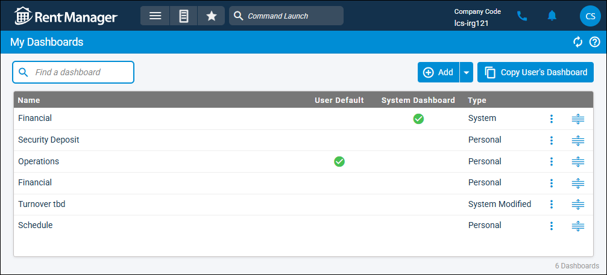

Source: https://rmxhelp.rentmanager.com/Topics/Express/CSH/Dashboard-My.htm
My Dashboards (Page)
The My Dashboards page displays your personal dashboards. Personal dashboards are dashboards that have been created by you, or a system dashboard that has been assigned to you. Additionally, if a system dashboard is assigned to you and you make edits to that dashboard, the new version of the system dashboard becomes a system modified dashboard. This page allows you to manage and modify those dashboards for use specific to your user account.
Related Privileges
| Group | Privilege | Column |
|---|---|---|
| Setup | Edit own dashboards | Enabled |
For more information, refer to Control User Access.
To view the My Dashboards page, go to  arrow_forward
arrow_forward  Administration, then go to .
Administration, then go to .

Column Descriptions
The following columns are available on this page:
| Column | Description |
|---|---|
|
Name |
The name of the dashboard (e.g., Operations, Maintenance, Payables, etc.). |
|
User Default |
A More Information Only one dashboard can be considered the default. To change the default dashboard for your user account, click |
|
System Dashboard |
A |
|
Type |
The dashboard type (e.g., Personal, System, or System Modified). More Information When you modify a system dashboard, the Type changes to System Modified. If the original system dashboard is updated on the System Dashboards page, your modified dashboard does not receive that update. |
Row Actions
The following row actions are available from the  menu:
menu:
| Action | Description |
|---|---|
|
Make Default |
The default dashboard that displays for the user. For System dashboards, this is the only available row action. |
|
Details |
Opens the Edit Dashboard page, where you can manage the dashboard's tiles and settings. |
|
Delete |
Removes the dashboard from Rent Manager. Only Personal-type dashboards can be deleted. To remove a System-type dashboard from the My Dashboards page, you must be unassigned from that dashboard. |
|
Copy |
Opens the Copy Dashboard pop-up, which allows you to copy and, if desired, rename the dashboard. By default, the dashboard name begins with Copy of. |